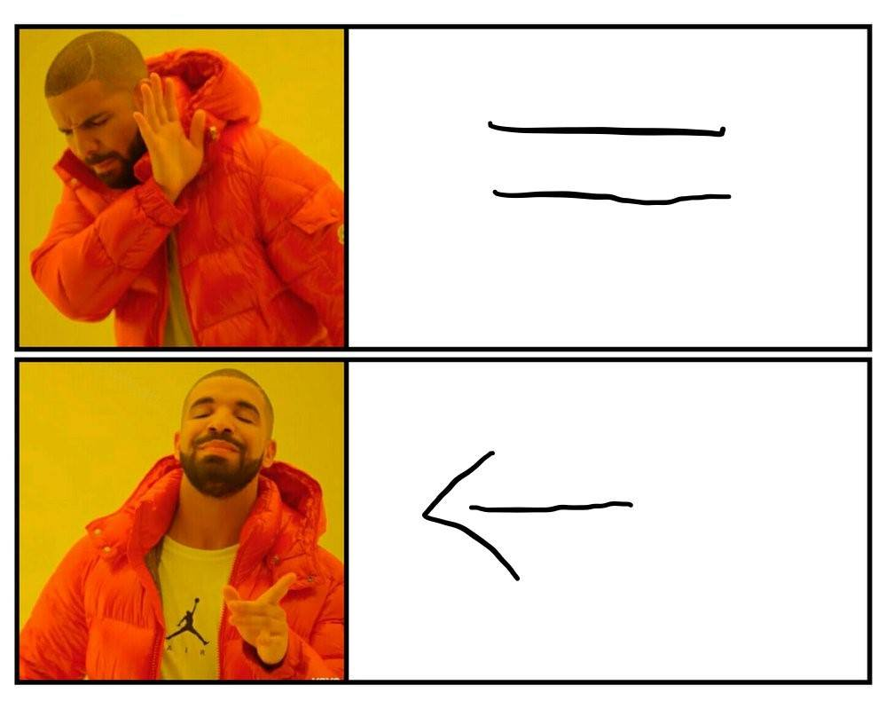

Introdução à Ciência de Dados no R
Aula 02 - Comandos básicos
Aula 02
Antonio Vinícius Barbosa
25-11-2023

Como o R funciona?
R Básico
A forma mais simples de se utilizar o R é através de operações básicas:
Neste caso, o R executa a operação e retorna seu valor na tela.
Operações básicas
# Adicao
23 + 4
## [1] 27
# Subtracao
13 - 5
## [1] 8
# Multiplicao
9 * 7
## [1] 63
# Divisao
10/3
## [1] 3.333333
# Exponeciacao
2^5
## [1] 32
# Raiz quadrada
sqrt(16)
## [1] 4
# Arredondar
round(pi, 2)
## [1] 3.14
# Logaritmo (base e)
log(10)
## [1] 2.302585
# Logaritmo (outras bases)
log(10, 10)
## [1] 1O símbolo # é utilizado para adicionar comentários ao código.
Salvando valores em objetos
- Ao executar uma expressão seu valor é gerado, mas não armazenado.
- Uma atribuição, por outro lado, salva o valor em um objeto (ou variável).
- É, normalmente, feito através do operador especial
<- - Além do operador
<-, atribuições podem ser feitas através=
Regra de etiqueta (1)
Na maior parte do tempo, usuários do R utilizam apenas o operador <- para atribuições, enquanto o símbolo de igualdade (=) é reservado para indicar os argumentos dentro de uma função.
Portanto, para atribuições
Atribuições
Os objetos criados são armazenados na memória e atualizados a cada nova atribuição:
🚀 Quizz #1
- Crie a variável
renda_dompara armazenar o valor da renda total aproximada do seu domicílio. - Agora, atribua à variável
n_pessoaso número de pessoas que moram no seu domicílio. - Calcule a renda domiciliar per capita e atribua à variável
renda_pc.
03:00
Gerenciando objetos
Para listar todos os objetos armazenados na memória, basta utilizar a função ls()
Para excluir ou remover um objeto, utilizamos a função rm()
Pacotes 📦
Pacotes no R
Um pacote é um conjunto de funções que servem para uma dada finalidade. Cada pacote possui uma documentação própria explicando sua funcionalidade e exemplos de uso.
Pacotes no R
Para instalar um pacote específico no R, fazemos:
Mesma função, diferentes pacotes…
Em algumas situações, uma função com o mesmo nome pode estar vinculada a diferentes pacotes. Neste caso, utilizamos o símbolo ::, como em pacote::funcao().
Dessa forma, evitamos confusão quanto ao uso de funções homônimas.
Removendo variáveis e pacotes
A função rm(list = ls()) remove todos os objetos em uso na memória, mas mantém os pacotes carregados. Para limpar todo o ambiente, devemos reiniciar a seção:
Seção > Reiniciar Seção- Ou através das teclas de atalho
Crtl + Shift + F10
Estruturas de dados
Veremos as principais estruturas de dados do R:
- Vetores
- Matrizes
- Data frames
- Listas
Vetores
Criando vetores
A construção de vetores (conjunto de valores) é feito através do operador c():
# Características dos participantes
idade <- c(19, 21, 23, 24, 25, 31, 33)
idade
## [1] 19 21 23 24 25 31 33
sexo <- c("M", "M", "F", "F", "M", "F", "M")
sexo
## [1] "M" "M" "F" "F" "M" "F" "M"
aluno_econ <- c(TRUE, FALSE, FALSE, TRUE, TRUE, T, F)
aluno_econ
## [1] TRUE FALSE FALSE TRUE TRUE TRUE FALSE
cra <- c(8.26, 7.18, 8.02, 7.33, 6.79, 9.45, 7.65)
cra
## [1] 8.26 7.18 8.02 7.33 6.79 9.45 7.65Classes
Para determinar a classe de um vetor, utilizamos a função class()
As classes definem a forma de armazenamento na memória. Por exemplo, um vetor de números inteiros requer menos espaço de armazenamento do que os vetores numéricos.
Classes
Para converter manualmente (quando possível) a classe de um vetor, utilizamos as funções as.character(), as.numeric(), as.integer() e as.logical():
Combinando vetores
Ao combinar dois vetores de classes distintas, o R converte os elementos para torná-los comparáveis:
O novo vetor é formado unicamente por caracteres. Portanto, vetores no R são formado com elementos de uma única classe.
Operação com vetores
Considere o vetor cra. Podemos fazer algumas operações básicas, tais como:
Operação com vetores
A função summary() apresenta um conjunto de estatísticas básicas sobre um vetor:
Para obter o tamanho de um vetor, utilizamos a função length():
Outras operações com vetores
Operação com vetores
Outras operações básicas com vetores:
Operação com vetores
Algumas destas operações não funcionam quando existem elementos faltantes (representados por NA)
Neste caso, devemos remover os dados faltantes da seguinte forma:
Reciclagem dos elementos dos vetores
Podemos fazer operações com vetores de diferentes tamanhos. No entanto, o R utiliza um regra de reciclagem dos seus elementos:
Note
Equivale a soma de c(1, 2, 3, 1, 2) + c(2, 4, 6, 8, 10)
Regras de Etiqueta (2)
Nome de objetos:
- Nome de objetos em minúsculo
- Utilize
_para separar palavras no nome dos objetos - Evite separar por . ou utilizar o formato
CamelCase - Use nomes informativos para os objeto
- Não faça reuso do nome dos objetos em uma mesma análise
Sequências
O R possui algumas funcionalidades para gerar sequências numéricas:
Operações lógicas
O R possui dois valores lógicos, TRUE e FALSE. Os operadores de comparação entre dois objetos são:
-
==igual
-
!=diferente -
<menor que -
>maior que -
<=menor ou igual que -
>=maior ou igual que
Operações lógicas
Seguem alguns exemplos de como são feitas as comparações entre dois valores:
Selecionando elementos em um vetor
Para selecionar um ou mais elementos de um vetor, utilizamos o operador [ ]
Selecionando elementos em um vetor
Para exluir elementos do vetor, utilizamos o sinal - antes do indexador da posição
Selecionando elementos em um vetor
Podemos utilizar operações lógicas para selecionar elementos em um vetor
Selecionando elementos em um vetor
É possível selecionar elementos por nome, através da função names()
Regras de Etiqueta (3)
Espaçamento
- É uma boa prática colocar um espaço antes e depois de cada operador fixo (
=,+,-,<-, etc) - Sempre coloque um espaço após a vírgula e nunca antes (como no português escrito).
🚀 Quizz #2
Considere o vetor lista_vegana <- c("maca", "banana", "laranja", "kiwi", "batata", "brocolis")
- Quantos elementos o vetor
lista_veganapossui? - Qual a classe do vetor?
- Selecione o elemento
laranja - Selecione apenas os vegetais utilizando a condição
| - Exclua o elemento
kiwibaseado na sua posição no vetor - Adicione
tomateao vetor.
05:00
Matrizes
Matrizes
Uma matriz é simplesmente um vetor com dimensões. Para entender o conceito de matrizes, considere um vetor único com receita e despesa de três municípios:
Matrizes
Podemos criar uma matriz através da função matrix().
Matrizes
Para selecionar um elemento de uma matriz, devemos informar os índices relativos à linha i e à coluna j através do operador [i,j]. Por exemplo:
Matrizes
Além disso, podemos atribuir nomes para as linhas e colunas de uma matriz:
Matrizes
É possível criar matrizes através da junção de colunas (cbind) ou linhas (rbind):
Matrizes
É possível criar matrizes através da junção de colunas cbind() ou linhas rbind():
Operações com matrizes
Algumas operações usuais com matrizes são as seguintes:
🚀 Quizz #3
- Crie três vetores
x,yezcom inteiros, cada um com 3 elementos. Combine os três vetores para formar uma matrizA(3 × 3), onde cada coluna representa um vetor. Altere os nomes das linhas paraa,bec. - Crie um vetor com 12 elementos do tipo
numeric. Converta o vetor em uma matrizB(4 x 3) usandomatrix(). Preencha os elementos por linha ajustando o argumentobyrow = TRUE. - Obtenha a transposta da matriz
Be multipique pela matriz originalB. Qual a dimensão da matriz obtida?
10:00